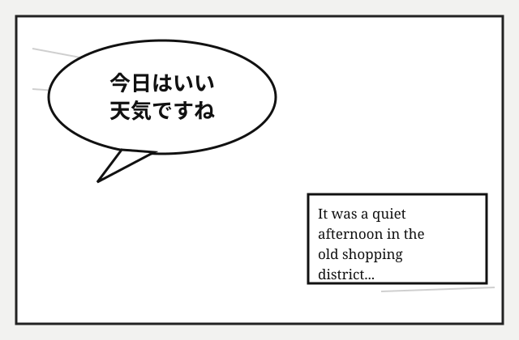
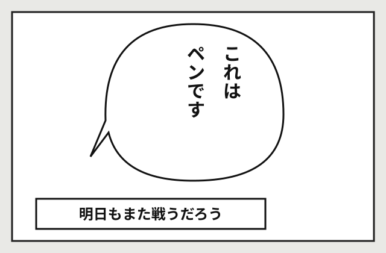

Serve this folder over HTTP (e.g. python -m http.server 8000 from the
extension root, then open http://localhost:8000/test/page.html), click the
extension icon, and press Translate page. The bubbles contain Japanese
(horizontal + vertical) and English text; translations are drawn back onto the images.

